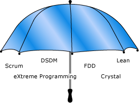

|
Jeff Sutherland invented Scrum in 1993 and worked with Ken Schwaber to formalize Scrum at OOPSLA'95. Together, they extended and enhanced Scrum at many software companies and helped write the Agile Manifesto. Jeff's blog reviews the origins and best practices of Scrum at http://scrum.jeffsutherland.com . |
Agile development is a term that was derived from the Agile Manifesto, which was written in 2001 by a group that included the creators of Scrum, Extreme Programming (XP), Dynamic Systems Development Method (DSDM), and Crystal; a representative of feature-driven development; and several other thought leaders in the software industry. The Agile Manifesto established a common set of overarching values and principles for all of the individual agile methodologies at the time. It details four core values for enabling high-performing teams.
-
Individuals and their interactions
-
Delivering working software
-
Customer collaboration
-
Responding to change
These core values are supported by 12 principles, which you can find at the following Web site: Manifesto for Agile Software Development.
These values are not just something the creators of the Agile Manifesto intended to give lip service to and then forget. They are working values. Each individual agile methodology approaches these values in a slightly different way, but all of these methodologies have specific processes and practices that foster one or more of these values.
 Individuals
and Interactions
Individuals
and Interactions
Individuals and interactions are essential to high-performing teams. Studies of “communication saturation” during one project showed that, when no communication problems exist, teams can perform 50 times better than the industry average. To facilitate communication, agile methods rely on frequent inspect-and-adapt cycles. These cycles can range from every few minutes with pair programming, to every few hours with continuous integration, to every day with a daily standup meeting, to every iteration with a review and retrospective.
Just increasing the frequency of feedback and communication, however, is not enough to eliminate communication problems. These inspect-and-adapt cycles work well only when team members exhibit several key behaviors:
-
respect for the worth of every person
-
truth in every communication
-
transparency of all data, actions, and decisions
-
trust that each person will support the team
-
commitment to the team and to the team’s goals
To foster these types of behavior, agile management must provide a supportive environment, team coaches must facilitate their inclusion, and team members must exhibit them. Only then can teams achieve their full potential.
Moving toward these types of behavior is more difficult than it might appear. Most teams avoid truth, transparency, and trust because of cultural norms or past negative experiences from conflict that was generated by honest communications. To combat these tendencies, leadership and team members must facilitate positive conflict. Doing so not only helps create productive behavior but also has several other benefits:
-
Process improvement depends on the team to generate a list of impediments or problems in the organization, to face them squarely, and then to systematically eliminate them in priority order.
-
Innovation occurs only with the free interchange of conflicting ideas, a phenomenon that was studied and documented by Takeuchi and Nonaka, the godfathers of Scrum.
-
Aligning the team toward a common goal requires the team to surface and resolve conflicting agendas.
-
Commitment to work together happens only when people agree on common goals and then struggle to improve both personally and as a team.
This last bullet, about commitment, is especially important. It is only when individuals and teams are committed that they feel accountable for delivering high value, which is the bottom line for software development teams. Agile methodologies facilitate commitment by encouraging teams to pull from a prioritized work list, manage their own work, and focus on improving their work practices. This practice is the basis of self-organization, which is the driving force for achieving results in an agile team.
To create high-performing teams, agile methodologies value individuals and interactions over processes and tools. Practically speaking, all of the agile methodologies seek to increase communication and collaboration through frequent inspect-and-adapt cycles. However, these cycles work only when agile leaders encourage the positive conflict that is needed to build a solid foundation of truth, transparency, trust, respect, and commitment on their agile teams.
Working
Software over Comprehensive Documentation
Working software is one of the big differences that agile development brings. All of the agile methodologies that are represented in the Agile Manifesto stress delivering small pieces of working software to the customer at set intervals.
All agile teams must establish what they mean when they say “working software,” which is frequently known as the definition of done. At a high level, a piece of functionality is complete only when its features pass all tests and can be operated by an end user. At a minimum, teams must go beyond the unit test level and test at the system level. The best teams also include integration testing, performance testing, and customer acceptance testing in their definition of what it means to be done with a piece of functionality.
One CMMI Level 5 company has shown, through extensive data on many projects, that defining acceptance tests along with the feature, implementing features serially and in priority order, immediately running acceptance tests on each feature, and fixing any bugs that are identified as highest priority will systematically double the speed of production and reduce defects by 40 percent. This from a company that already has one of the lowest defect rates in the world.
The Agile Manifesto recommends that teams deliver working software at set intervals. Agreeing on a definition of done is one of the practical ways that agile teams bring about the high performance and high quality that is needed to accomplish this goal.
Customer
Collaboration over Contract Negotiation
Over the past two decades, project success rates have more than doubled worldwide. This is attributed to smaller projects and frequent deliveries, which allow the customer to provide feedback on working software at regular intervals. The writers of the manifesto were clearly on to something when they stressed that getting the customer involved in the software development process is essential to success.
The agile methodologies foster this value by having a customer advocate work hand-in-hand with the development team. The first Scrum team, for example, had thousands of customers. Because it was not feasible to involve them all in product development, they selected a customer proxy, called a product owner, to represent not only all the customers in the field, but also management, sales, support, client services, and other stakeholders. The product owner was responsible for updating the list of requirements every four weeks as the team released working software, taking into account the current reality and actual feedback from customers and stakeholders. This allowed the customer to help shape the software that was being created.
The first XP team began with an internal IT project. They were able to have a company end user on their team work with them daily. About 10 percent of the time, consultancies and internal teams can find an end user who can work with the team on a day-to-day basis. The other 90 percent of the time, they must appoint a proxy. This customer proxy, whom XP teams call the customer, works with end users to provide a clear, prioritized list of features for developers to implement.
Collaborating with the customer (or customer proxy) on a daily basis is one of the key reasons why industry data shows that agile projects have more than twice the success rate of traditional projects on average worldwide. Agile methodologies recognize this and, as such, have created a place on their development teams that is specifically for the customer representative.
Responding
to Change over Following a Plan
Responding to change is essential for creating a product that will please the customer and provide business value. Industry data shows that over 60 percent of product or project requirements change during the development of software. Even when traditional projects finish on time, on budget, with all features in the plan, customers are often unhappy because what they find is not exactly what they wanted. “Humphrey’s Law” says that customers never know what they want until they see working software. If customers do not see working software until the end of a project, it is too late to incorporate their feedback. Agile methodologies seek customer feedback throughout the project so that they can incorporate feedback and new information as the product is being developed.
All agile methodologies have built-in processes to change their plans at regular intervals based on feedback from the customer or customer proxy. Their plans are designed to always deliver the highest business value first. Because 80 percent of the value is in 20 percent of the features, well-run agile projects tend to finish early, whereas most traditional projects finish late. As a result, customers are happier, and developers enjoy their work more. Agile methodologies are based on the knowledge that, in order to succeed, they must plan to change. That is why they have established processes, such as reviews and retrospectives, that are specifically designed to shift priorities regularly based on customer feedback and business value.
Agile
is an Umbrella – Methodologies are Implementations
Agile development is not a methodology in itself. It is an umbrella term that describes several agile methodologies. At the signing of the Agile Manifesto in 2001, these methodologies included Scrum, XP, Crystal, FDD, and DSDM. Since then, Lean practices have also emerged as a valuable agile methodology and so are included under the agile development umbrella in the illustration later in this topic.
Each agile methodology has a slightly different approach for implementing the core values from the Agile Manifesto, just as many computer languages manifest the core features of object-oriented programming in different ways. A recent survey shows that about 50 percent of agile practitioners say that their team is doing Scrum. Another 20 percent say that they are doing Scrum with XP components. An additional 12 percent say that they are doing XP alone. Because more than 80 percent of agile implementations worldwide are Scrum or XP, GovDev for TFS 2010 v1.0 focuses on the core processes and practices of Scrum and XP.
Scrum is a framework for agile development processes. It does not include specific engineering practices. Conversely, XP focuses on engineering practices but does not include an overarching framework of development processes. That does not mean that Scrum does not recommend certain engineering practices or that XP has no process. For example, the first Scrum implemented all of the engineering practices that are now known as XP. However, the Scrum framework for software development was designed to get a team started in two or three days, whereas engineering practices often take many months to implement. Therefore, it left the question of when (and whether) to implement specific practices up to each team. Scrum co-creators Jeff Sutherland and Ken Schwaber recommend that Scrum teams get started immediately and create a list of impediments and a process improvement plan. As engineering practices are identified as impediments, teams should look to XP practices as a way to improve. The best teams run Scrum supplemented with XP practices. Scrum helps XP to scale, and XP helps Scrum to work well.
The following table shows how key terms in Scrum and XP can be interchanged.
|
Scrum |
XP |
|---|---|
|
product owner |
customer |
|
scrummaster |
XP coach |
|
team |
team |
|
sprint |
iteration |
|
sprint planning meeting |
planning game |